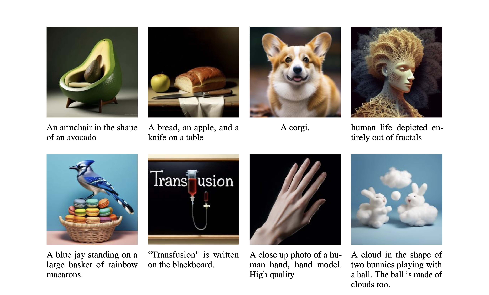
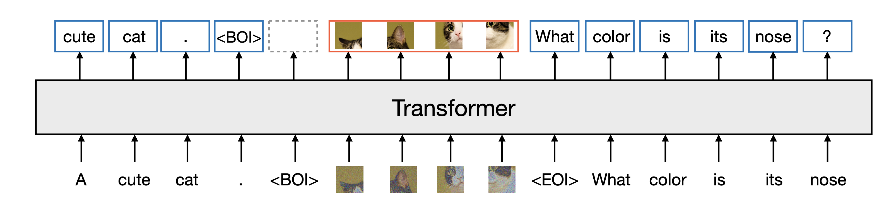
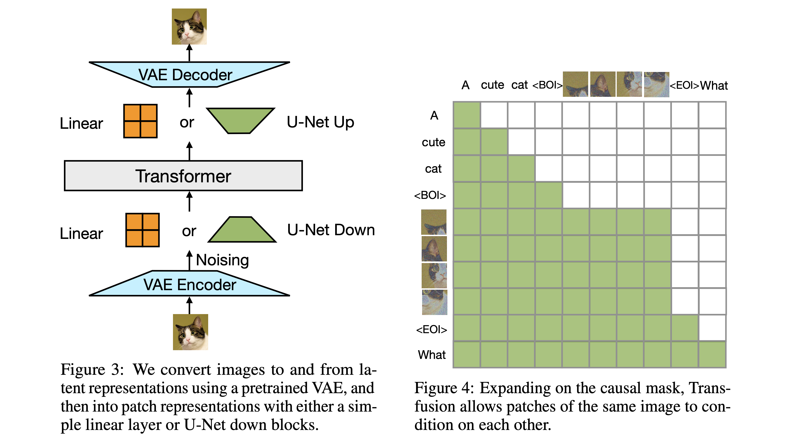
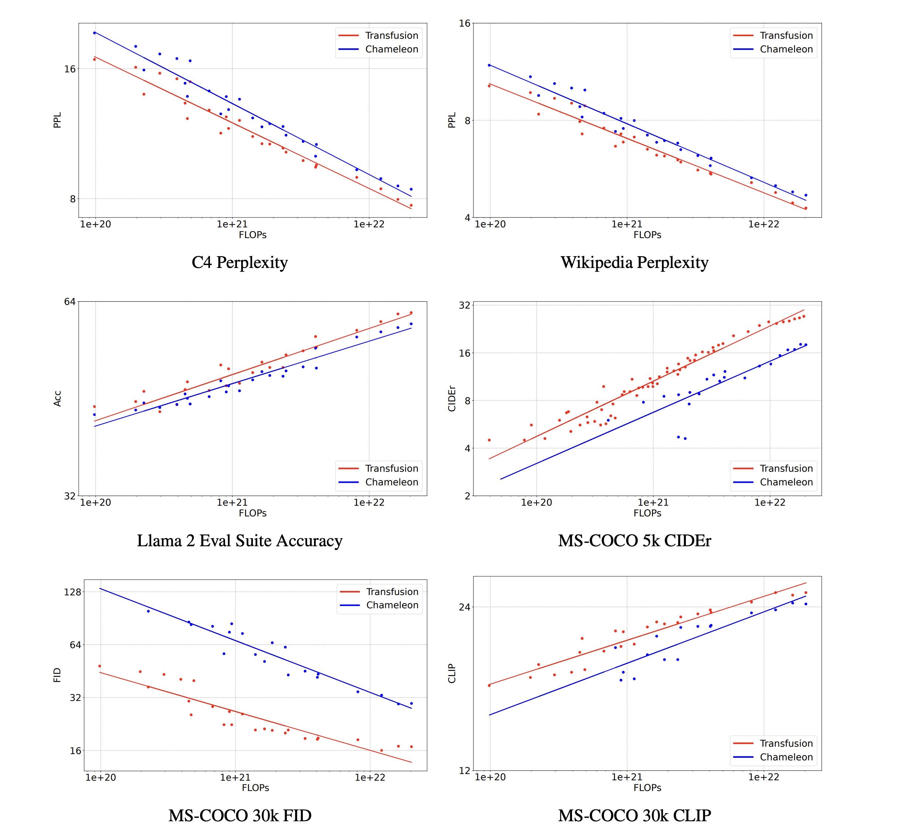

多模态生成模型需要能够感知、处理和生成离散元素（文本，代码）和连续元素（图片，视频）。 在处理离散数据模态（如文本）方面，基于下一个词预测目标的语言模型已经取得了显著的进展， 成为该领域的主导方法。 而对于生成连续数据模态（如图像），扩散模型及其泛化形式是目前最前沿的技术。 尽管已有一些尝试将语言模型和扩散模型结合起来，但这些方法通常需要对模型架构进行简化， 比如将连续模态量化为离散标记，这样做虽然简化了模型，但可能会丢失信息。 研究者们指出，需要开发能够无缝生成离散和连续模态的模型， 而不是将它们分开处理。这要求模型能够以一种统一的方式处理多种类型的数据。
论文提出了Transfusion方法，这是一种训练单一模型以理解和生成多种模态数据的方法。 这种方法通过将语言建模损失函数和扩散模型结合起来，实现了对混合模态序列的训练。 研究者从头开始，在混合文本和图像数据上预训练了参数量高达70亿的Transfusion模型。 使用文本和图像数据的混合，他们建立了一系列单模态和跨模态基准的缩放定律。 实验表明，Transfusion在单模态和多模态基准测试中， 相较于对图像进行量化并在离散图像token上训练语言模型，很明显具有更好的扩展性。 Transfusion是一种十分有前途的方法，可以用于训练真正的多模态模型。
研究者在50%的文本和50%的图像数据上预训练了一个Transformer模型，不过对于两种模态来说，分别使用了不同的目标。 前者的目标是 Next Token Prediction；而对于图像则是其扩散。 在训练的每一步中，模型都会同时接触到这两种模态和损失函数。 标准嵌入层将文本tokens转换为向量， 而块化层（patchification layer）则将每个图像表征为一系列块向量。 随后，研究者对文本应用因果注意力，对图像块应用双向注意力。 在推理时，他们引入了一种解码算法，它结合了语言模型的文本生成和扩散模型的图像生成的标准实践。
如下图所示，只有一个Transformer模型，它同时处理文本和图像。 对于离散的文本，采用自回归的方式生成。 对于图像，图像的连续向量是以并行的方式输入到Transformer中， 然后通过扩散模型生成图像。图中的BOI和EOI标志着模态与模态的分开。

语言模型就是一个普通的自回归模型，每个 token 是一个随机变量，联合概率分布就是 ，因此对应优化的Loss必然是：
扩散模型就是DDPM，对应的Loss为：
首先作者们讲文本词元化，每个词元用一个整数表示，每个图像通过VAE（预训练好的）编码成一组连续矢量（Latent Patchs） 根据从左到右，从上到下的原则排列成一个块。这样就得到了一个包含离散元素和连续元素的单一序列。
接下里继续将数据转化Transformer需要的向量， 对于文本，这些自己组件是嵌入矩阵，会将每个输入整数转换为向量空间，并将每个输出向量转换为词汇表上的离散分布。 对于图像，研究者则尝试了两种方法将k×k块向量的局部窗口压缩为单个Transformer向量（反之亦然）： （1）一个简单的线性层，以及（2）U-Net的上下块。

语言模型通常使用因果掩码，来有效地计算整个序列的损失和梯度，只需一次前向-后向传递，而不会泄露未来token的信息。 相比之下，图像通常会使用不受限制的（双向）注意力来建模。 而Transfusion通过对序列中的每个元素应用因果注意力，并在每个单独图像的元素内应用双向注意力，来结合这两种注意力模式。 这样，每个图像块就可以在关注同一图像中其他块的同时，只关注序列中先前出现的文本或其他图像的块。
这个 λ 的来源论文中只提到是一个平衡系数，至于 λ 取多少有待后续调整。
